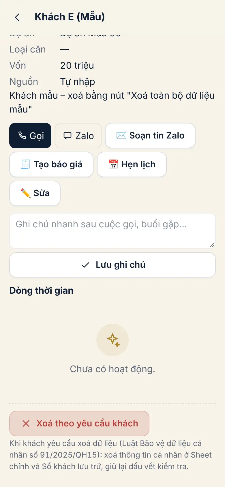
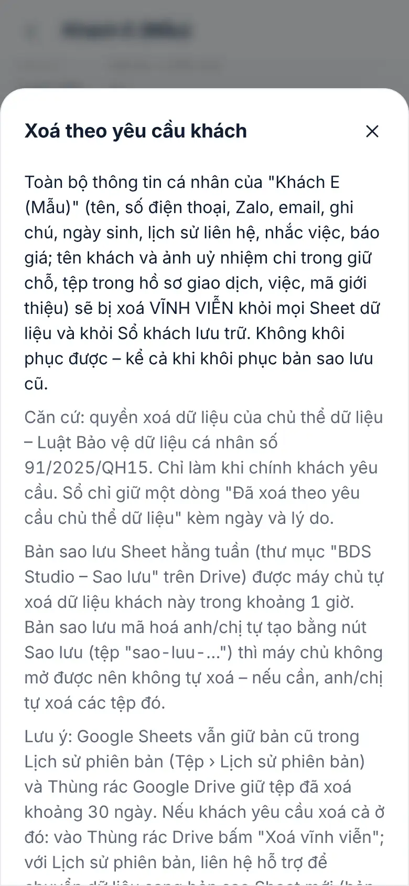
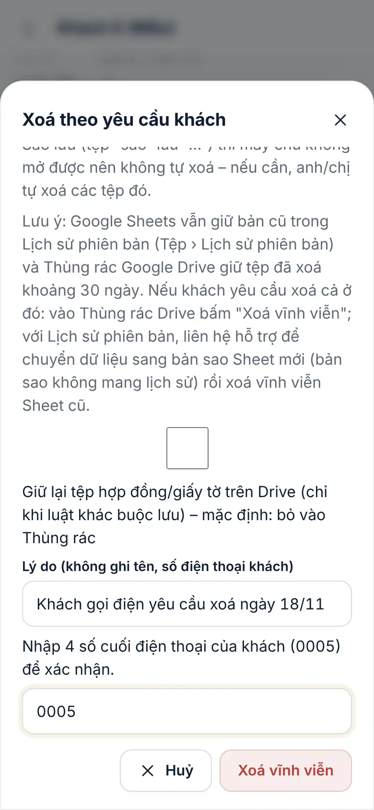

Xoá dữ liệu khách theo yêu cầu
Khi khách yêu cầu xoá thông tin cá nhân (quyền của chủ thể dữ liệu – Luật Bảo vệ dữ liệu cá nhân số 91/2025/QH15).
Không khôi phục được. Chỉ làm khi chính khách yêu cầu.
- Mở hồ sơ khách, kéo xuống cuối, bấm Xoá theo yêu cầu khách.

- Đọc cảnh báo: xoá vĩnh viễn tên, số điện thoại, Zalo, email, ghi chú, ngày sinh, lịch sử liên hệ, nhắc việc, báo giá… khỏi mọi Sheet dữ liệu và Sổ khách lưu trữ.

- Muốn giữ tệp hợp đồng/giấy tờ trên Drive (chỉ khi luật khác buộc lưu): tick ô Giữ lại tệp hợp đồng/giấy tờ…. Mặc định các tệp này bỏ vào Thùng rác.
- Gõ Lý do – không ghi tên, số điện thoại khách (vd "Khách gọi điện yêu cầu xoá ngày 18/11").
- Gõ 4 số cuối điện thoại của khách để xác nhận.
- Bấm Xoá vĩnh viễn. Khách biến mất khỏi danh sách; sổ chỉ giữ một dòng "Đã xoá theo yêu cầu chủ thể dữ liệu" kèm ngày và lý do.

Cần làm thêm nếu khách yêu cầu xoá sạch:
- Tệp sao lưu tự tạo bằng nút Sao lưu (tệp
sao-luu-…) app không mở được nên không tự xoá – tự xoá các tệp đó. - Google Sheets còn giữ bản cũ trong Tệp › Lịch sử phiên bản, Thùng rác Drive giữ tệp khoảng 30 ngày. Vào Thùng rác bấm Xoá vĩnh viễn; với Lịch sử phiên bản, liên hệ hỗ trợ.
Nút này chỉ hiện cho tài khoản Chủ / Quản trị có quyền Xoá dữ liệu khách. Lead trong Kho lead có nút Xoá theo yêu cầu riêng.